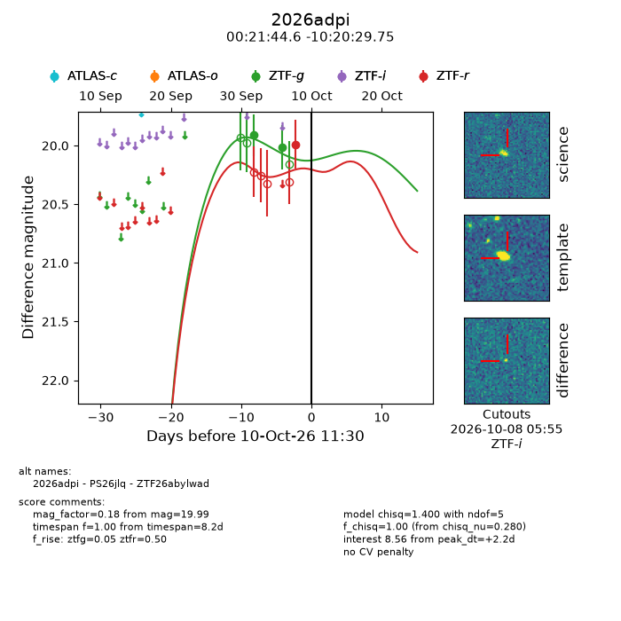
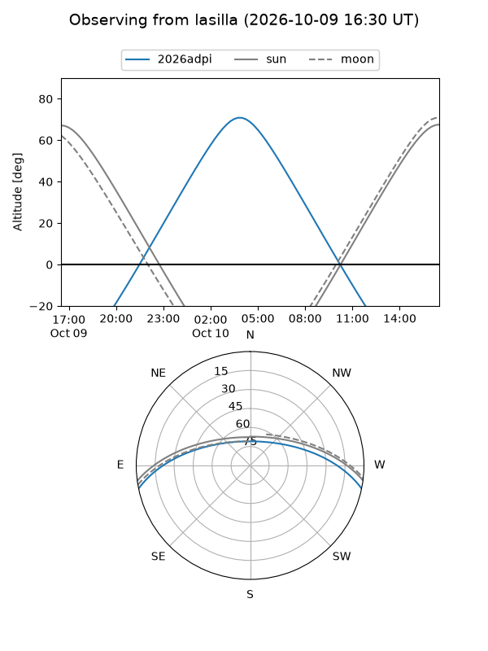
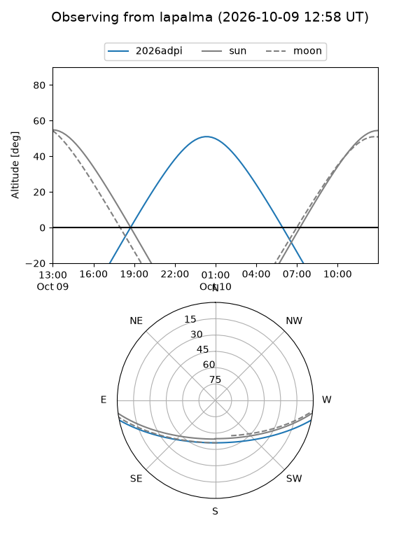
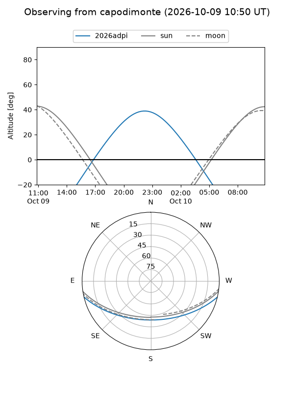
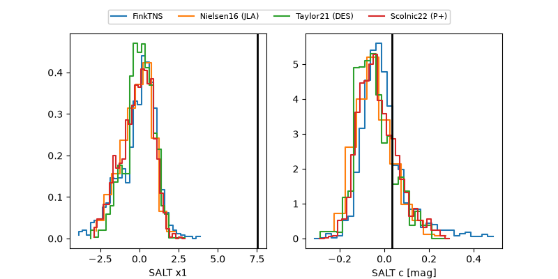

2026adpi
Target 2026adpi at 2026-10-10 11:31
Aliases and brokers:
FINK-ZTF: ztf.fink-portal.org/ZTF26abylwad
Lasair-ZTF: lasair-ztf.lsst.ac.uk/objects/ZTF26abylwad
ALeRCE-ZTF: alerce.online/object/ZTF26abylwad
YSE-PZ: ziggy.ucolick.org/yse/transient_detail/2026adpi
TNS name: wis-tns.org/object/2026adpi
Direct TNS query: direct search
alt names
ZTF26abylwad (ztf,fink_ztf)
2026adpi (tns,yse)
PS26jlq (panstarrs)
Coordinates:
equatorial (ra, dec) = 5.4360,-10.34160
equatorial (HMS+DMS) = 00:21:44.64,-10:20:29.75
galactic (l, b) = (98.8999,-71.81400)
Flags:
peak dt: +2.2
Photometry:
last ztfg=20.01, ztfr=19.99
2 ztfg, 1 ztfr detections
Lightcurve

Visibility



Additional plots
